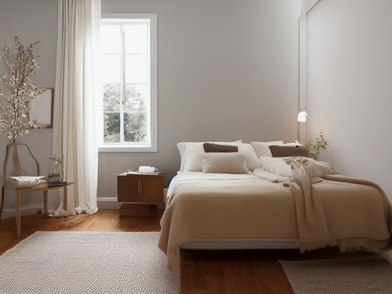

Primary Bedroom micro zone
The Other Sleeper's Nightstand
This is the other sleeper's side, and it is the one zone in this room that is not yours to decide about.
One session: 15-30 min. most of it in the conversation before you start, very little in the work

What done looks like
The top is clear enough to set a mug down without moving anything first, the lamp cord runs behind the leg rather than across the floor beside the bed, and any medication in the drawer is in date, capped, and closed away from a child or a dog who can climb onto this bed.
Check these before you start
- Poison, choke, or strangleSleep aids, painkillers and prescription bottles loose in an open bedside drawer sit at exactly the height a toddler or a dog reaches from the mattress. Cap them and shut them into a box.
- FallA lamp cord crossing the walking strip on this side catches a foot in a dark room. Run it down behind the leg and along the wall.
The six passes, in order
Work them in this order. Sorting after you have arranged things means arranging things you were about to remove.
Sort
Decide what stays. Everything else leaves the zone now.
You do not empty this drawer. Bring a bin liner and a box into the room, finish your own side first so there is something to look at, then ask whether they want the same. What they hand you goes. What they keep stays, and you say nothing about it.
Straighten
Give what stays a home, placed where the hand actually reaches.
Agree on the shared edge only: the floor beside this nightstand stays clear because you both walk past it, and the lamp cord runs down the leg for the same reason. What fills the drawer is entirely theirs.
Shine
Clean it, and use the cleaning to inspect what you cannot see when it is full.
Dust the top, wipe the lamp base and the switch, and vacuum the slot between the nightstand and the bed frame where tissues, hairbands and dust collect where neither of you looks.
Safety
Make the zone safe for everybody who uses it, including the shortest person.
Medication is the one exception to leaving this side alone. Check the dates together, screw the caps down properly, and if a child or a dog gets up onto this bed, move tablets out of the open drawer into a closed box.
Standardize
Write down the best way you know today, so it survives you forgetting.
Match the standard, not the contents. Both tops run the same item count and the same lidded drink rule, and what fills each drawer is each sleeper's own business.
Sustain
Attach the reset to something that already happens, so it keeps itself.
When the sheets come off, both nightstand tops get cleared and wiped as part of the same job, so one side cannot quietly drift while the other holds.
Whose things you are allowed to throw away
You want to fix this side because you can see it from yours, and every argument about tidiness in a shared bedroom starts right here. The rule that settles it: you clean, they cull. You may wipe, vacuum and straighten anything on this side, and you may not remove a single object from it. Finish your own nightstand to the standard, leave theirs untouched, and let the difference between the two tops be the entire argument you make. If they never change a thing, you have still fixed half the room and kept the marriage. The one item you can raise out loud is the out of date medication, because that is a safety question and not a taste question.
Cleaning it properly
Clean the other sleeper's side without reorganising it. Work the lamp and the top, then get the one spot both of you ignore, the narrow slot between the nightstand and the bed frame.
Inspect as you clean. Cleaning is the only time you see the zone empty, so use it.
- A sticky spill or residue in the drawer from a bottle that has leaked or sweated.
- A frayed or warm patch on the lamp cord where it runs behind the leg.
- Tarnish or a green bloom on a metal lamp base or the metal frame of the photo.
- A drawer pull or knob that has worked loose in its screw.
The standard that keeps it fixed
The same item count on both tops, medication in date and closed away, and the drawer contents belonging to whoever sleeps on that side.
Reset trigger. When the sheets go into the wash, both tops get cleared and wiped in the same pass.
Next in this room
- Your Own Nightstand, the zone before this one
- The Dresser Top, the zone after this one
- All 6 micro zones in the Primary Bedroom
Related reading
- What is 6S?
- This zone's safety pass, in full
- Is one spot in this zone always the one you skip?
- Why this zone gets messy again
- Decluttering vs. organizing
- Before you buy storage for this zone
- Still does not fit, even after the honest count?
- Does something in this zone actually get used somewhere else?
- Stuck on one item in this zone?
- Written the standard, but nobody else follows it?
- Does everyone in the house agree what "done" looks like here?
- Does more than one person use this zone?
- Found a duplicate of something in this zone?
- Why the standard above names one home per category
- Is the everyday item in this zone actually the easy one to reach?
- Not sure whether to keep something in this zone?
- Does this zone keep running out of something?
- Started this zone and stalled partway through?
- Have you stopped noticing the clutter in this zone?
When you want it off the screen
Carry The Other Sleeper's Nightstand into the room
The method above is complete and free. The Whole House Print Pack puts The Other Sleeper's Nightstand and the other 113 micro zones on 684 printable cards, so the steps you just read are not stuck behind a phone screen while your hands are full.
The Print Pack, 19 dollarsJust this zone, 4 dollarsOr draw a card free
The Other Sleeper's Nightstand on its own is 4 dollars for 6 cards. All 114 micro zones is 19 dollars for 684. The whole house is the better buy; the single zone is here so you can take only what you are working on.
If The Other Sleeper's Nightstand keeps fighting back, the real problem usually sits somewhere else in the room. A one hour virtual consult is 250 dollars: we find the function, the friction and the root cause together, and you keep a written standard for the space. See what a consult covers.